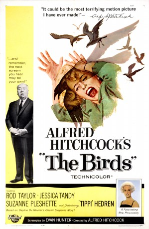

#8045 Die Hitchcock - Vögel
Alternativ: The Birds
Auszeichnungen: für 1 Oscars nominiert 1 GoldenGlobes gewonnen
 
 IMDB-Wertung: 7.7 / 10
IMDB-Wertung: 7.7 / 10  Metascore: 0
Metascore: 0 
Melanie Daniels is the modern rich socialite, part of the jet-set who always gets what she wants. When lawyer Mitch Brenner sees her in a pet shop, he plays something of a practical joke on her, and she decides to return the favor. She drives about an hour north of San Francisco to Bodega Bay, where Mitch spends the weekends with his mother Lydia and younger sister Cathy. Soon after her arrival, however, the birds in the area begin to act strangely. A seagull attacks Melanie as she is crossing the bay in a small boat, and then, Lydia finds her neighbor dead, obviously the victim of a bird attack. Soon, birds in the hundreds and thousands are attacking anyone they find out of doors. There is no explanation as to why this might be happening, and as the birds continue their vicious attacks, survival becomes the priority.
Jahr: 1963
Dauer: 119 Minuten
FSK: 16
Land: USA Studio: Universal PicturesTonspuren:
Untertitel:
Auflösung: 1080p (1920x1040) Größe: 8960 MB
Genre: Horror, Drama, Liebe, Mystery
Regisseur:  Alfred Hitchcock
Alfred Hitchcock
Drehbuch: Daphne Du Maurier
Soundtrack:
Darsteller:
 Rod Taylor als Mitch Brenner
Rod Taylor als Mitch Brenner Jessica Tandy als Lydia Brenner
Jessica Tandy als Lydia Brenner Suzanne Pleshette als Annie Hayworth
Suzanne Pleshette als Annie Hayworth- Tippi Hedren als Melanie Daniels
 Veronica Cartwright als Cathy Brenner
Veronica Cartwright als Cathy Brenner- Ethel Griffies als Mrs. Bundy
 Charles McGraw als Sebastian Sholes
Charles McGraw als Sebastian Sholes- Ruth McDevitt als Mrs. MacGruder
 Lonny Chapman als Deke Carter
Lonny Chapman als Deke Carter Joe Mantell als Traveling Salesman at Diner's Bar
Joe Mantell als Traveling Salesman at Diner's Bar- Doodles Weaver als Fisherman Helping with Rental Boat
 Malcolm Atterbury als Deputy Al Malone
Malcolm Atterbury als Deputy Al Malone Karl Swenson als Drunken Doomsayer in Diner
Karl Swenson als Drunken Doomsayer in Diner Richard Deacon als Mitch's City Neighbor
Richard Deacon als Mitch's City Neighbor Elizabeth Wilson als Helen Carter
Elizabeth Wilson als Helen Carter- Bill Quinn als Sam
- Morgan Brittany als Brunette Girl at Birthday Party (uncredited)
- Darlene Conley als Waitress (uncredited)
 Alfred Hitchcock als Man Walking Dogs Out of Pet Shop (uncredited)
Alfred Hitchcock als Man Walking Dogs Out of Pet Shop (uncredited) Dal McKennon als Sam the Cook (uncredited)
Dal McKennon als Sam the Cook (uncredited)- Mike Monteleone als Gas Station Attendant (uncredited)
- Renn Reed als Girl at Birthday Party (uncredited)
- Jeannie Russell als School Child (uncredited)
- John McGovern als Postal Clerk
- Doreen Lang als Hysterical Mother in Diner
- Roxanne Tunis als Extra (uncredited)
Datei: X:\Person\Hitchcock\Hitchcock - Vögel, Die (1963, FSK16, 1920x1040).mkv seit 19.01.2018
Festplatte: HD Collection-7+mehr(A-Z)+Person
 Es gibt insgesamt 25 Filme in der Gruppe 'Person\Hitchcock'
Es gibt insgesamt 25 Filme in der Gruppe 'Person\Hitchcock'